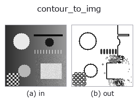

bridge op• Datenarten: contour → image
• Aufruf: fullseye.apply(img, "contour_to_img", a=0.5, b=0.5) (das 2-D-Modell ist ein Bild plus zwei skalare Regler a,b∈[0,1])

*Die Abbildung ist die tatsächliche Ausgabe auf einer synthetischen 128×128-Eingabe. Links Eingabe, rechts Ausgabe. Punktwolken als Draufsicht-Streudiagramm (Helligkeit = z), 1-D-Reihen als Linie, Volumen als Maximum-Projektion entlang z, Videos als mittleres Bild, komplexe Bilder als Betrag; Rückgabewerte, die kein Bild ergeben, werden als Werte gezeigt.*
Regler a durchfahren (0,1 / 0,5 / 0,9, der andere Regler auf Standard):
▸ contour_to_img: Regler a durchfahren (Doku-Website)
Regler b durchfahren (0,1 / 0,5 / 0,9, der andere Regler auf Standard):
▸ contour_to_img: Regler b durchfahren (Doku-Website)
Stufen (die vorangehenden Ops → dieser Op, von links nach rechts):
▸ contour_to_img: Stufen (Doku-Website)
Auf anderen Bildern (synthetische Szene / Foto / Münzen. Obere Reihe: Eingaben, untere Reihe: deren Ausgaben. Regler auf Standard):
▸ contour_to_img: andere Eingaben (Doku-Website)
Zeichnet eine XLD-Kontur in ihrem eigenen Koordinatensystem zurück — 43 Ops erzeugen Konturen, doch nicht 1 einzige Op konnte sie in ein Bild überführen.
Der Abbildungsgenerator zeichnet Konturen als Polylinien, aber das ist eine Implementierung im Werkzeug und von einer registrierten Op aus nicht aufrufbar (es erscheint weder in fullseye.apply noch in Studio).
• a → Linienstärke 1 + int(2a) (1 bis 3 Pixel).
• b → Art der Dunkelheitszuweisung. b < 0.5 ergibt überall dieselbe Dunkelheit, b >= 0.5 dunkler für Konturen mit mehr Punkten (nach Rang auf 0.15 bis 0.85 verteilt). Welche die wichtigsten Konturen sind, ist auf einen Blick zu sehen.
• Rückgabewert: float64 in der shape der Konturen (Größe des Originalbilds), dunkle Linien auf Weiß. ★Gibt es nicht 1 einzige Kontur, wird ein leeres Blatt zurückgegeben (keine schwarze Tafel).
• Leitfaden zur Familie gallery2d_bridge
• Katalog der Beispieldaten (Download-URLs / Lizenzen) — 2-D nutzt skimage.data (BSD/Public Domain) plus synthetische Bilder, 3-D nennt Download-URLs echter Datenquellen (Stanford, PDS, …).
• Herkunft und Literatur der Operatoren — die Quellen der Forschung/Verfahren, auf denen diese Operatorfamilie beruht.
• Der kanonische Algorithmus (Autor, Jahr) und seine Anwendungen stehen im Familienleitfaden oben.
Das Programm unten ist nachweislich lauffähig (gleiche Eingabe wie die Abbildung). In der Studio-Hilfe wird dieser Block zu Schaltflächen, die es sofort laden und ausführen.
threshold 0.50 0.50 sk_find_contours 0.50 0.50 contour_to_img 0.50 0.50
▸ Diese Pipeline laden · Laden & ausführen
• gallery2d_bridge — py -3.11 examples/gallery2d_bridge.py
image als Eingabe)identity · gaussian · mean_box · bilateral · unsharp · median · min_filter · max_filter
bridge)img_to_points · img_to_keypoints · img_to_signal · img_to_projection_profile · img_to_counts · img_to_matrix · img_to_video · img_to_volume
*Provenance: ops.py — 2D Operator-Registry. Diese Notiz wird von tools/opdocs.py md erzeugt (nicht von Hand bearbeiten).*
© 2026 Kazufumi Furuse — Fullseye operator documentation. Licensed under Apache-2.0.